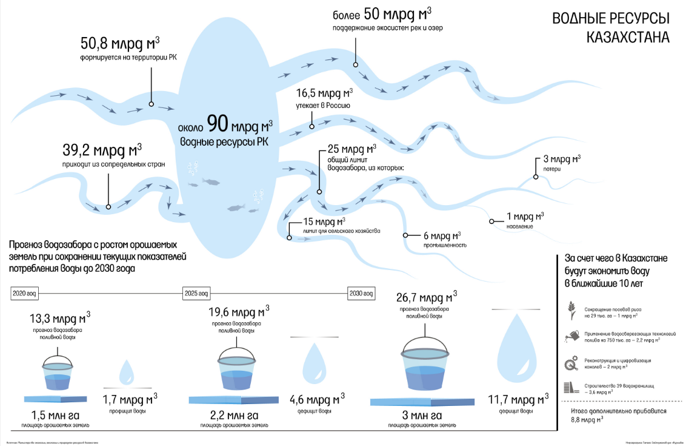

Как увеличивать орошаемые земли и экономить воду в Казахстане?
Жанболат Мамышев
Рассказываем о предложении министерства экологии, геологии и природных ресурсов В 2020 году в Казахстане было 1,5 млн га орошаемых земель. За десять лет, к 2030 году, их должно стать в два раза больше – 3 млн га. Задачу поставил президент Токаев в своем первом послании в сентябре 2019 года. «Мы имеем значительный потенциал для производства органической и экологически чистой продукции, востребованной не только в стране, но и за рубежом. Мы должны поэтапно увеличить количество орошаемых земель до 3 млн га к 2030 году», – сказал глава государства.
Водная арифметика
По данным Минэкологии, общие водные ресурсы Казахстана сейчас составляют около 90 млрд кубометров в год. Из них 50,8 млрд кубометров формируется на территории Казахстана, а еще 39,2 млрд кубометров поступает из сопредельных стран – Кыргызстана, Узбекистана, России и Китая. Только для поддержания речных и озерных экосистем, подсчитали в Минэкологии, необходимо более 50 кубических километров воды. Еще 16,5 млрд кубометров утекает ниже по течению в сторону России – из крупных рек это Иртыш, Ишим и Тобол. Получается, что лимит водозабора составляет 25 млрд кубометров в год. Сельское хозяйство использует 15 млрд кубометров (60% от общего лимита), промышленность – 6 млрд кубометров (24%), 1 млрд кубометров идет на хозяйственные нужды населения, а еще 3 млрд кубометров (12%) являются потерями. Почти вся вода для агросектора (97%) используется в четырех южных областях: в 2020 году Туркестанская и Кызылординская области пустили на полив по 4,1 млрд кубометров каждая, в Алматинской и Жамбылской области на орошение направлено 3,6 и 1 млрд кубометров соответственно. На севере и востоке страны больше надеются на естественный полив: Восточно-Казахстанская область в 2020 году потратила на полив 277 млн кубометров воды, Павлодарская – 40 млн, Костанайская – 14 млн, Акмолинская – 5 млн. Сейчас, при 1,5 га орошаемых земель, Казахстану воды для сельского хозяйства хватает. Но если существующие практики потребления поливной воды сохранятся, а площадь орошаемых земель удвоится, потенциальный дефицит воды составит 11,7 млрд кубометров. Отдельно стоит отметить, что общий объем водных ресурсов Казахстана – показатель нестабильный. В последние годы приток воды сокращался: в 2019 году по всем водным бассейнам республики он составил всего 83 млрд кубометров. Для сравнения: в 2018 году было 104 млрд кубометров, а в 2017 году – 124 млрд. Не исключено, что текущее снижение – не предел, в предыдущие два цикла приток воды падал до 74 млрд кубометров в 2012 году и 68 млрд кубометров в 2008 году. Около половины всего притока приходится на водный бассейн Иртыша, который формируется в Китае. Активное использование КНР иртышской воды влияет на Казахстан, который находится ниже по течению реки.
Рисовый чек станет меньше
Первое, за счет чего, по предложениям Минэкологии, можно увеличить площади орошаемых земель – это постепенный уход от части влаголюбивых культур в пользу менее влаголюбивых. Например, в Казахстане рис занимает в общей площади поливных земель 7% (104 тыс. га), однако потребляет 28% (3,8 млрд кубометров) всей воды, используемой в сельском хозяйстве. Сейчас в Кызылординской, Туркестанской и Алматинской областях рис выращивают на более чем 100 тыс. га, Минэкологии предлагает сократить эти посевы примерно на треть. «С целью недопущения дефицита воды необходимо уменьшить посевы риса на 29 тыс. га, а именно в Кызылординской – на 15 тыс. га, Алматинской – на 10 тыс. га и Туркестанской области – на 4 тыс. га, что позволит сэкономить один кубический километр воды», – заявил министр экологии, геологии и природных ресурсов Магзум Мирзагалиев 22 декабря 2020 года на заседании правительства. Почему увлечение влаголюбивыми культурами не дает возможности активно наращивать площади орошаемых земель, Мирзагалиев объяснил на примере. В Алматинской области в 2020 году площадь орошаемых земель составила 583 тыс. га, водозабор – 3,6 млрд кубометров (при лимите в 3,9 млрд). Почти десятая часть всей воды – 350 млн кубометров – была потрачена на полив 10 тыс. га риса. Поэтому Минэкологии предлагает не сажать рис, а высвободить эти 350 млн кубометров для полива 34 тыс. га с менее влаголюбивыми культурами.
Каналы цифровизации
Второй блок предложений Минэкологии связан с реконструкцией оросительных сетей и внедрением цифровизации – за счет этого потери воды должны снизиться на 2 млрд кубометров (с 3 млрд кубометров потерь до 1 млрд). Для этого планируется реконструировать 6 тыс. км каналов, а долю «облицованных» каналов (таких, которые не позволяют воде уходить в почву) увеличить до 50% с текущих 22%. Также предлагается оцифровать до 2025 года 119 каналов с общим водозабором 6 млрд кубометров. Стоимость реконструкции и цифровизации каналов составит 192 млрд тенге – 79 млрд тенге выделит республиканский бюджет, 113 млрд тенге страна рассчитывает получить от международных институтов развития. Другой источник «водной экономии» – применение водосберегающих технологий полива на 750 тыс. га. Благодаря использованию таких технологий средний водозабор должен сократиться с более чем 8 тыс. кубометров до 6,6 тыс. кубометров на 1 га. Мера позволит сэкономить до 30% (2,2 млрд кубометров) воды, используемой на этих площадях. Также за 10 лет будут построены 39 новых водохранилищ общей емкостью 3,6 млрд кубометров – они не только дадут дополнительные объемы воды для полива, но и позволят снизить угрозу затопления для 70 населенных пунктов, в которых проживает 137 тыс. человек. Все эти меры вкупе позволят дополнительно получить около 8,8 млрд кубометров воды ежегодно. В результате к концу десятилетия на полив 3 млн га потребуется 19,8 млрд кубометров воды. Все перечисленные меры внесены в Национальный проект по управлению водными ресурсами – минэкологии планирует утвердить его до 1 июля. Учитывая зависимость от трансграничных источников в южных регионах, в Минэкологии РК полагают, что новые орошаемые земли должны вводиться в первую очередь в водообеспеченных восточных и северных регионах.
Шанс для продаж
Водосберегающий акцент уже начал привлекать в Казахстан поставщиков ирригационного оборудования. Одна из таких компаний – американская Valmont Industries, которая в январе подписала соглашение с казахстанской Kusto Group по строительству в республике завода мощностью 1 тыс. дождевальных установок в год. Инвестиции в проект составят $50 млн, завод планируется начать строить в этом году, а его запуск должен состояться не позднее 1 января 2025 года. Экономия воды при применении дождевальных установок, по данным ФАО (Продовольственная и сельскохозяйственная организация ООН), составляет 50–75%, в зависимости от конкретной культуры. Директор, член совета директоров Kusto Group Талгат Турумбаев отмечает, что из 1480 тыс. га орошаемых земель в стране только 120 тыс. га находятся под дождевальными установками. «У нас пока стоит задача, как минимум, за 10 лет перевести на дождевальные установки около 320 тыс. га из орошаемых земель. Учитывая, что государство разрабатывает программу по увеличению орошаемых земель до 3 млн га и в них под системы орошения предусмотрено около 1 млн га, то перспективы у дождевальных установок велики», – поделился он с «Курсивом». Емкость казахстанского рынка в компании оценивают в 500 установок в год (хотя сама Valmont с 2008 года реализовала в Казахстане всего 300 установок). Дождевальные установки, которые собираются производить в Казахстане, могут покрыть 50 га и более каждая – они изготавливаются под конкретный запрос сельхозпроизводителя. От характеристик зависит и стоимость установки. По словам Турумбаева, самая простая дождевальная установка, позволяющая поливать 80–100 га, будет стоить около $80 тыс. Владелец небольшого картофелеводческого хозяйства в 80 га в Акмолинской области Алексей Вознюк считает такую цену слишком высокой. Он не использует специальные ирригационные установки, а поднимает воду для полива из реки Ишим насосом, работающим на жидком топливе. Вода поступает в обычный земляной ров (его дно тоже можно назвать «облицованным», защита не дает воде уходить в почву). Трактор, проезжая над рвом, с помощью специального устройства забирает оттуда воду и орошает посевы по обе стороны от рва. Получается как раз дождевальная установка, хоть и без использования водосберегающих технологий.
CONTACT
If you have suggestions, we welcome your input and encourage you to reach out to us.
Phone: +7(777)-777-77-77
Email: BIG4@environment.kz